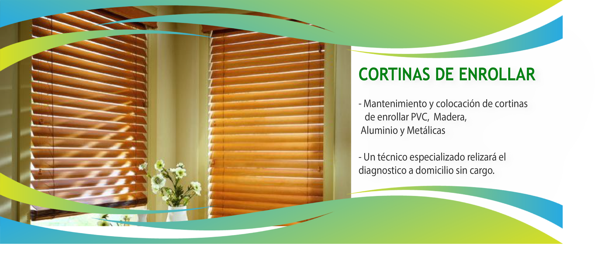
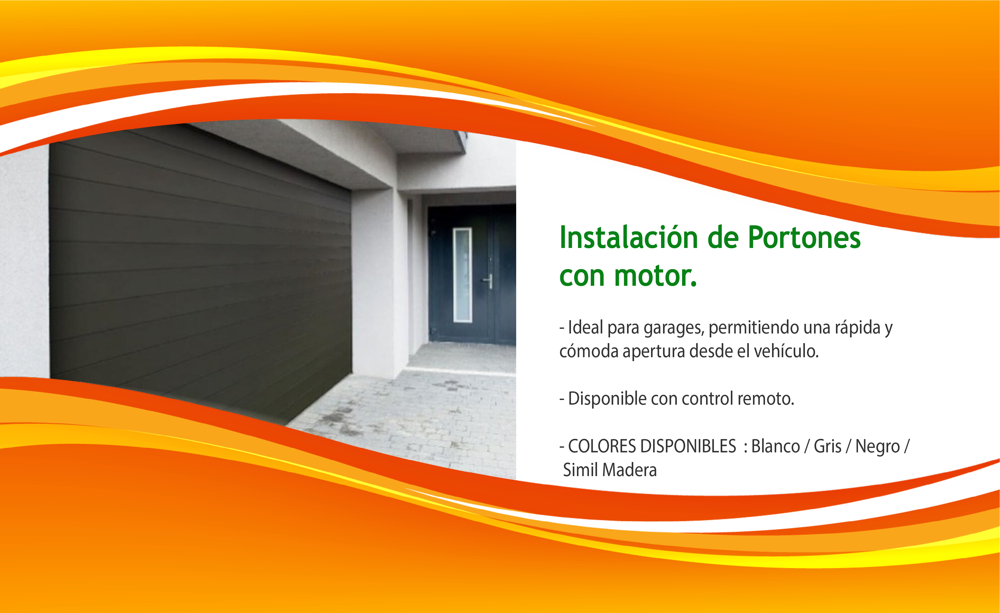
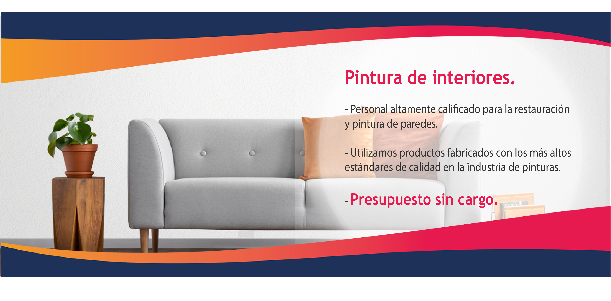

Los portones enrollables de aluminio constituyen una alternativa segura y de estilo para garajes domiciliarios. Garantizan una larga duración siendo resistentes a los agentes atmosféricos gracias a su material de aluminio inyectado con poliuretano expandido. Día a día la gente está empezando tomar conciencia sobre lo necesario que es utilizar productos sustentables, tanto para reducir costos innecesarios como para aportar su granito de arena al cuidado del medio ambiente con productos que permitan un buen ahorro energético. Está en constante desarrollo de nuevos sistemas sustentables con tecnología de punta en post de brindar a nuestros clientes un producto de excelencia.
Logramos la renovación completa de su casa y/o edificio que aumentará el valor de su propiedad. Buscamos y resolvemos filtraciones, trabajos de albañilería y detalles estéticos que dejarán su casa y/o edificio en perfectas condiciones en el interior y exterior.
En la fabricación de cortinas, empleamos principalmente: Raulí Chileno, Pino Hemlock y Madera Kiri. Países con regimenes de reforestación como Chile, Canadá y Brasil son principales canteras de producción de la materia prima utilizada, con maderas que por su “nobleza” y “ductilidad” para trabajar en piezas de gran longitud. Nuestro proceso de fabricación garantiza el correcto diseño de varilla para un ensamble perfecto: desde la selección de materia prima, hasta el calibrado de perforaciones y torneados o preparado profesional previo al armado, una adecuada incorporación del herraje en su armado y una cuidadosa terminación artesanal. Tambien realizamos reparaciones y restauraciones cambiando todos los herrajes.